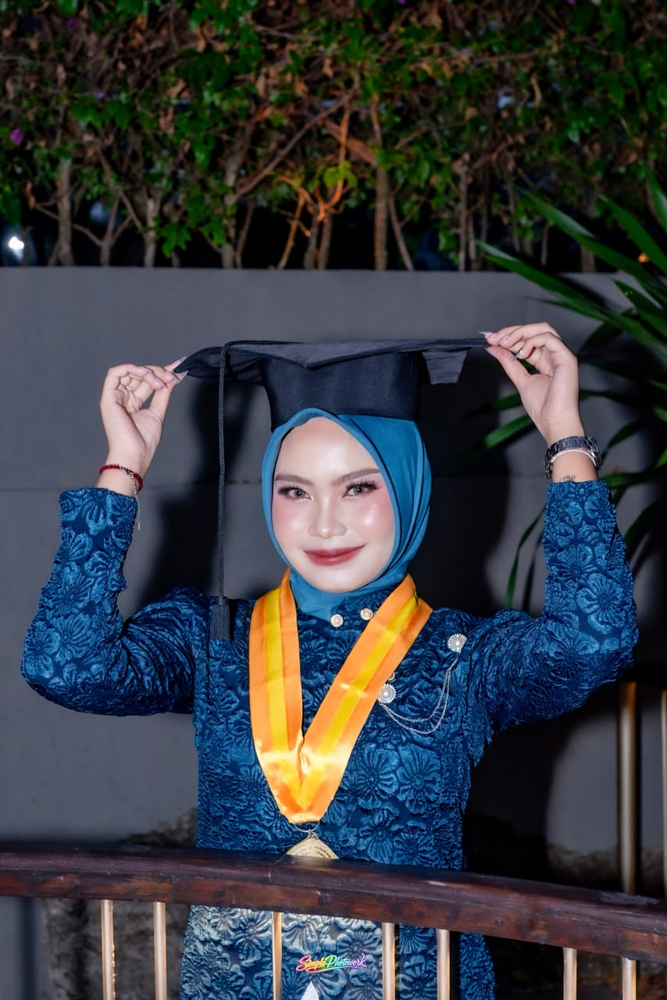
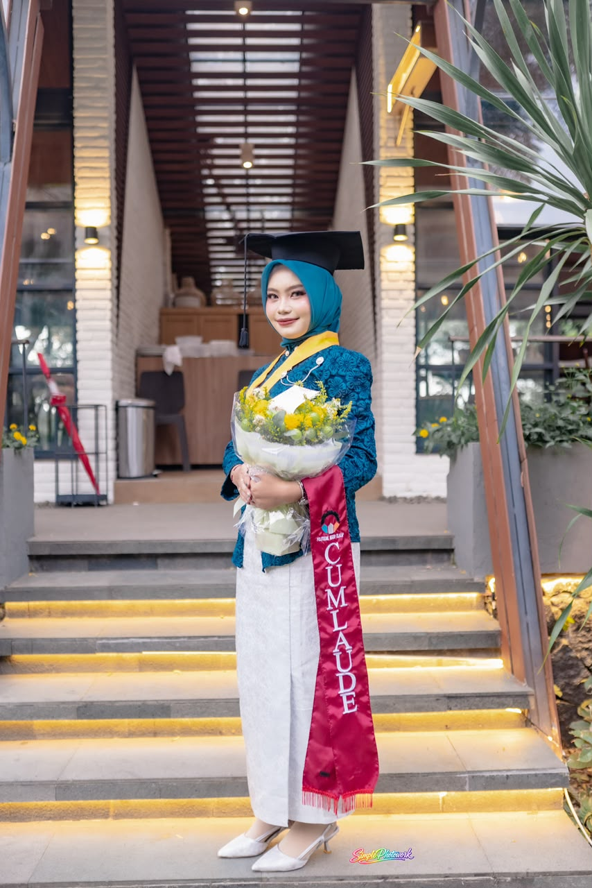

Andin Ardelina Saputri
<Full-Stack Web & Mobile Developer/>
Menggabungkan presisi rekayasa perangkat lunak, visi pengembangan web modern, dan karisma public speaking untuk menghadirkan solusi digital yang berdampak dan representasi kampus yang inspiratif.


Informatics Engineering
Saya Andin, lulusan D3 Teknik Informatika Politeknik Negeri Cilacap (IPK 3,76, Cumlaude) yang membangun aplikasi web dan mobile dengan Laravel, Flutter, dan PostgreSQL. Saat magang di Diskominfo Banyumas, saya mengerjakan sistem pengajuan magang dari analisis kebutuhan dan perancangan basis data sampai deployment ke server produksi. Tugas akhir saya adalah sistem reservasi dan rekam medis klinik gigi dengan odontogram digital.
Selain di bidang teknis, saya berpengalaman sebagai MC, moderator, dan Runner Up 1 Duta Kampus, sehingga mampu menyampaikan solusi teknis secara jelas kepada pengguna non-teknis. Serta memiliki komitmen untuk terus belajar dan berkontribusi dalam menghasilkan solusi digital yang bermanfaat.
- FullStack Developer Intern — Diskominfo BanyumasWeb (Laravel) & mobile (Flutter), REST API, hingga deployment.
- TersertifikasiJunior Web Developer, Junior Mobile Programming, MikroTik MTCNA.
- Runner Up 1 Duta KampusPoliteknik Negeri Cilacap — public speaking dan kepemimpinan.
Engineering Showcase
Klik perangkat atau geser untuk melihat proyek berikutnya.
Technical Skills & Competencies
Teknologi dan kompetensi yang saya gunakan untuk membangun solusi digital end-to-end.
Experience & Milestones
Pengalaman profesional, organisasi, dan kepemimpinan. Klik foto untuk memperbesar.
Sertifikasi & Kompetensi
Bukti formal kompetensi yang diakui lembaga profesional. Klik sertifikat untuk memperbesar.
Let's build something impactful together.
Terbuka untuk peluang full-time, magang, maupun kolaborasi proyek engineering.